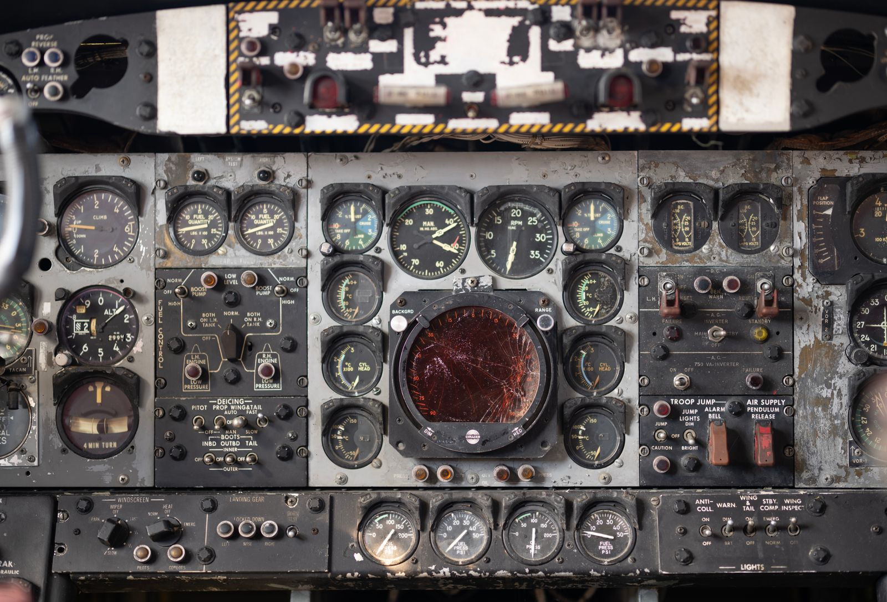

Card 03 · The pilot — story, method, honesty, terms
The pilot behind the cards
Claire Beaumont came to flight test through the engineering door: an aeronautical engineering degree first, because a test pilot who cannot read the loads plot is a passenger with opinions. Twelve years in uniform followed, the last six in flight test, then test pilot school, then the civilian programmes out of Mojave that make up this practice.
The work divides in two. For research programmes and airframers, she flies — data-collection sorties where the product is a dataset, envelope work where the product is a boundary honestly found. For operators and training organisations, she teaches — because the transferable thing in flight test is never an aircraft type. It is the method: card, brief, build-up, debrief. Aircraft change every programme. The method is the same at Mach 0.4 and Mach 2.
Ratings and qualifications are stated the way they would be on a card: experimental test pilot (test pilot school graduate), fast-jet and chase qualified, instructor-rated for flight-test technique. Hours are not printed as a boast; the counted record that matters is on the Brief card — sorties, passes, scrubs, and the two zeros this practice intends to keep.
She instructs in cohorts of three because that is the largest group one instructor can honestly debrief. She reviews other programmes' cards because a card read by fresh eyes is the cheapest safety device in the industry. And she still flies the scrub-prone, unglamorous data passes herself, because a pilot who only flies the interesting points has stopped being a test pilot and started being a spectator.

The working page — how an engagement runs
Four stages, in order, every time
The card
Every test point is written before it is flown: the condition, the tolerance, the data required, and the knock-it-off criteria. If it is not on the card, it is not flown — including the interesting idea somebody has at breakfast.
The brief
The whole team — pilot, chase, telemetry, range — briefs together, and the knock-it-off criteria are spoken aloud by the people who will have to act on them. Anyone in the room can call it. That is not a courtesy; it is the design.
The build-up
One variable at a time, in steps small enough to be boring. The envelope is expanded by approaching each new point from a flown, debriefed neighbour — never by jumping to the corner to see what happens.
The debrief
Data before opinions, in that order, at the table. A point outside tolerance is re-flown, not explained away; a scrub is filed as procedure working. The file you eventually read is written here, not reconstructed later.
The honesty sheet — printed, not implied
What this practice will and will not do
The envelope is expanded one point at a time
There is no experienced-pilot exemption and no schedule exemption. Anyone offering to find your boundary faster is offering to spend your luck, and luck is not a transferable qualification.
A boom heard on the ground is a neighbour's complaint, not a trophy
Civil supersonic flight over land in the United States has been prohibited since 1973, and this practice flies inside that rule: supersonic work happens over designated corridors and water, under the applicable authorisations, or it does not happen. The low-boom research exists to earn a quieter rule with data — not to break the current one more loudly.
“Knock it off” is the bravest call in flight test
I have made it with the whole programme watching, a full day rate on the table, and a schedule breathing down the radio — and I would rather explain a scrub in the debrief than anything else, ever. The 31 scrubs on the scoreboard are counted, not hidden, because a practice that hides its scrubs will eventually hide something worse.
No classified work; no programme details
Everything on this site is described at programme-class level — the sorties, the tolerances, the outcomes — because the details belong to the programmes, including the ones that went well. If a portfolio in this trade shows you more than that, ask who gave them permission.
A re-flown point is information, not failure
Four of seventy-two passes on File 01 were re-flown. They are in the file, in the count, and in the price the client paid — which is what makes the other sixty-eight worth believing.
Engagement terms — the short version, in the open
Terms before the first sortie
- Cards and authorisations first. No engagement starts until the card set and the applicable flight authorisations have been reviewed together. No flight takes place outside a signed card and those authorisations — at any price, for any schedule.
- Scrub rule. A day scrubbed on procedure before engine start bills at half the day rate, chase at half the chase rate, as printed in Table F1. The rule exists so that money is never an argument in a safety call.
- Fees. Quoted in writing after the cards are reviewed; the quote does not move because a day went badly, a point was re-flown, or the weather had opinions.
- Instruction. Cohorts are capped at three pilots. Every syllabus point is flown or formally re-briefed — a point is never signed off from the ground.
- Data. Flight data belongs to the programme. This practice retains only what the programme authorises, and publishes nothing about an engagement beyond the class-level account the client has seen first.
Availability, stated plainly
For 2026: two programme slots and one instruction cohort remain. Card reviews (S.05) are taken between programmes, usually inside three weeks. If your dates need a pilot sooner than that, the honest answer is a recommendation to two colleagues — not a compressed build-up.